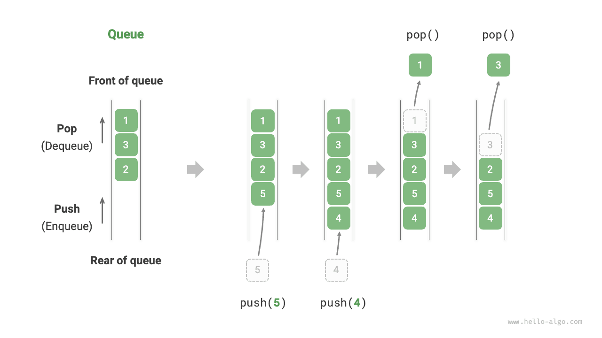

الأكوام والطوابير
الطابور
الطابور (queue) بنية بيانات خطية تتبع قاعدة «أول ما يدخل يخرج أولاً» (FIFO). وكما يوحي الاسم، فهو يحاكي اصطفاف الناس: يلتحق القادمون الجدد باستمرار بمؤخرة الطابور، بينما يغادر من في المقدمة واحداً تلو الآخر.
وكما هو موضح في الشكل أدناه، نسمي مقدمة الطابور «المقدمة» ونهايته «المؤخرة». وتسمى عملية إضافة عنصر إلى المؤخرة «الإدخال إلى الطابور»، بينما تسمى عملية إزالة العنصر الأمامي «الإخراج من الطابور».

العمليات الشائعة على الطابور
يوضح الجدول أدناه العمليات الشائعة على الطابور. ولاحظ أن أسماء الدوال قد تختلف باختلاف لغات البرمجة. وسنستخدم هنا التسمية نفسها المتبعة مع المكدسات.
جدول
| الطريقة | الوصف | التعقيد الزمني |
|---|---|---|
push() |
إدخال عنصر، أي إضافة عنصر إلى المؤخرة | $O(1)$ |
pop() |
إخراج العنصر الأمامي من الطابور | $O(1)$ |
peek() |
الوصول إلى العنصر الأمامي | $O(1)$ |
يمكننا استخدام فئات الطابور التي توفرها لغة البرمجة مباشرةً:
Go
/* تهيئة الطابور */
// في Go، استخدم list كطابور
queue := list.New()
/* إدخال العناصر إلى الطابور */
queue.PushBack(1)
queue.PushBack(3)
queue.PushBack(2)
queue.PushBack(5)
queue.PushBack(4)
/* الوصول إلى العنصر الأمامي */
peek := queue.Front()
/* إخراج عنصر من الطابور */
pop := queue.Front()
queue.Remove(pop)
/* الحصول على طول الطابور */
size := queue.Len()
/* فحص ما إذا كان الطابور فارغاً */
isEmpty := queue.Len() == 0
TypeScript
/* تهيئة الطابور */
// لا يوفّر TypeScript طابوراً مدمجاً، ويمكن استخدام Array كطابور
const queue: number[] = [];
/* إدخال العناصر إلى الطابور */
queue.push(1);
queue.push(3);
queue.push(2);
queue.push(5);
queue.push(4);
/* الوصول إلى العنصر الأمامي */
const peek = queue[0];
/* إخراج عنصر من الطابور */
// البنية الأساسية مصفوفة، لذا فإن التعقيد الزمني لـ shift() هو O(n)
const pop = queue.shift();
/* الحصول على طول الطابور */
const size = queue.length;
/* فحص ما إذا كان الطابور فارغاً */
const empty = queue.length === 0;
تنفيذ الطابور
لتنفيذ طابور، نحتاج إلى بنية بيانات تتيح إضافة العناصر من أحد الطرفين وإزالة العناصر من الطرف الآخر. وتلبي كل من القوائم المترابطة والمصفوفات هذا المطلب.
التنفيذ بقائمة مترابطة
وكما هو موضح في الشكل أدناه، يمكننا اعتبار «العقدة الرأسية» و«العقدة الذيلية» في القائمة المترابطة مقدمة الطابور ومؤخرته على التوالي، مع قاعدة أنه لا يمكن إضافة العقد إلا في المؤخرة ولا حذفها إلا من المقدمة.
وفيما يلي الكود الخاص بتنفيذ طابور باستخدام قائمة مترابطة:
TypeScript
/* طابور منفّذ بقائمة مترابطة */
class LinkedListQueue {
private front: ListNode | null; // العقدة الرأسية: المقدمة
private rear: ListNode | null; // العقدة الذيلية: المؤخرة
private queSize: number = 0;
constructor() {
this.front = null;
this.rear = null;
}
/* الحصول على طول الطابور */
get size(): number {
return this.queSize;
}
/* فحص ما إذا كان الطابور فارغاً */
isEmpty(): boolean {
return this.size === 0;
}
/* الإدخال إلى الطابور */
push(num: number): void {
// أضف num بعد العقدة الذيلية
const node = new ListNode(num);
// إذا كان الطابور فارغاً، اجعل المقدمة والمؤخرة معاً تشيران إلى node
if (!this.front) {
this.front = node;
this.rear = node;
// إذا لم يكن الطابور فارغاً، أضف node بعد العقدة الذيلية
} else {
this.rear!.next = node;
this.rear = node;
}
this.queSize++;
}
/* الإخراج من الطابور */
pop(): number {
const num = this.peek();
if (!this.front) throw new Error('Queue is empty');
// احذف العقدة الرأسية
this.front = this.front.next;
this.queSize--;
return num;
}
/* إعادة قائمة للطباعة */
peek(): number {
if (this.size === 0) throw new Error('Queue is empty');
return this.front!.val;
}
/* حوّل القائمة المترابطة إلى Array وأعدها */
toArray(): number[] {
let node = this.front;
const res = new Array<number>(this.size);
for (let i = 0; i < res.length; i++) {
res[i] = node!.val;
node = node!.next;
}
return res;
}
}
التنفيذ بالمصفوفة
حذف العنصر الأول في مصفوفة له تعقيد زمني $O(n)$، وهو ما يجعل عملية الإخراج من الطابور غير فعّالة. غير أننا يمكننا استخدام الطريقة الذكية التالية لتجنب هذه المشكلة.
يمكننا استخدام متغير front للإشارة إلى فهرس العنصر الأمامي، والاحتفاظ بمتغير size لتسجيل طول الطابور. ونعرّف rear = front + size، وهو ما يحسب الموضع الذي يلي العنصر الأخير في الطابور مباشرةً.
واستناداً إلى هذا التصميم، يكون النطاق الصالح الذي يحتوي على عناصر المصفوفة هو [front, rear - 1]. وتوضح الصورة أدناه طرق تنفيذ العمليات المختلفة:
- عملية الإدخال إلى الطابور: أسند العنصر المُدخل إلى الفهرس
rearوزدsizeبمقدار 1. - عملية الإخراج من الطابور: ما عليك سوى زيادة
frontبمقدار 1 وإنقاصsizeبمقدار 1.
وكما ترى، لا تتطلب كل من عمليتي الإدخال والإخراج سوى عملية واحدة، بتعقيد زمني $O(1)$.
وقد تلاحظ مشكلة: مع استمرارنا في الإدخال والإخراج، يتحرك كل من front وrear نحو اليمين. وعندما يصلان إلى نهاية المصفوفة، لا يمكنهما مواصلة التحرك. ولحل هذه المشكلة، يمكننا اعتبار المصفوفة «مصفوفة دائرية» يتصل رأسها بذيلها.
بالنسبة إلى المصفوفة الدائرية، نحتاج إلى إعادة front أو rear إلى بداية المصفوفة عند تجاوزهما النهاية. ويمكن تنفيذ هذا النمط الدوري باستخدام «عملية باقي القسمة» (modulo)، كما هو موضح في الكود أدناه:
TypeScript
/* طابور منفّذ بمصفوفة دائرية */
class ArrayQueue {
private nums: number[]; // مصفوفة لتخزين عناصر الطابور
private front: number; // مؤشر المقدمة، يشير إلى مقدمة عنصر الطابور
private queSize: number; // طول الطابور
constructor(capacity: number) {
this.nums = new Array(capacity);
this.front = this.queSize = 0;
}
/* الحصول على سعة الطابور */
get capacity(): number {
return this.nums.length;
}
/* الحصول على طول الطابور */
get size(): number {
return this.queSize;
}
/* فحص ما إذا كان الطابور فارغاً */
isEmpty(): boolean {
return this.queSize === 0;
}
/* الإدخال إلى الطابور */
push(num: number): void {
if (this.size === this.capacity) {
console.log('Queue is full');
return;
}
// استخدم عملية باقي القسمة لالتفاف rear إلى الرأس بعد تجاوز ذيل المصفوفة
// أضف num إلى مؤخرة الطابور
const rear = (this.front + this.queSize) % this.capacity;
// يتحرك مؤشر المقدمة موضعاً واحداً إلى الخلف
this.nums[rear] = num;
this.queSize++;
}
/* الإخراج من الطابور */
pop(): number {
const num = this.peek();
// حرّك مؤشر المقدمة موضعاً واحداً إلى الخلف، وإذا تجاوز الذيل فأعده إلى رأس المصفوفة
this.front = (this.front + 1) % this.capacity;
this.queSize--;
return num;
}
/* إعادة قائمة للطباعة */
peek(): number {
if (this.isEmpty()) throw new Error('Queue is empty');
return this.nums[this.front];
}
/* إعادة المصفوفة */
toArray(): number[] {
// إدخال العناصر إلى الطابور
const arr = new Array(this.size);
for (let i = 0, j = this.front; i < this.size; i++, j++) {
arr[i] = this.nums[j % this.capacity];
}
return arr;
}
}
لا يزال الطابور المنفّذ أعلاه محدوداً: فطوله غير قابل للتغيير. غير أن هذه المشكلة ليست صعبة الحل، إذ يمكننا استبدال المصفوفة بمصفوفة ديناميكية لإدخال آلية توسّع. ويمكن للقرّاء المهتمين محاولة تنفيذ ذلك بأنفسهم.
وتتفق استنتاجات المقارنة بين التنفيذين مع نظيراتها الخاصة بالمكدسات، ولن نعيدها هنا.
التطبيقات النموذجية للطابور
- طلبات تاوباو. بعد قيام المتسوقين بالطلب، تُضاف الطلبات إلى طابور، ثم يعالج النظام الطلبات الموجودة في الطابور وفق تسلسلها. وخلال «الدبل إيليفن»، تتولد أعداد هائلة من الطلبات في وقت قصير، ويصبح التزامن العالي تحدياً رئيسياً يتعين على المهندسين مواجهته.
- مهام قائمة الأعمال المتنوعة. أي سيناريو يحتاج إلى تنفيذ وظيفة «من سبق يُخدم أولاً»، مثل طابور مهام الطابعة أو طابور طلبات المطعم، يمكنه الحفاظ على ترتيب المعالجة بفعالية باستخدام الطوابير.